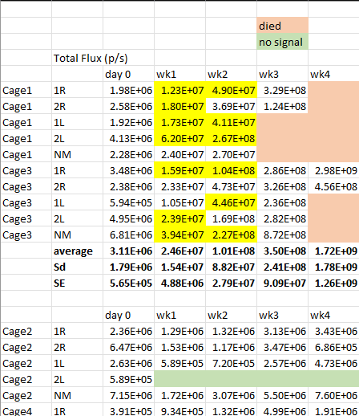

Handling and organizing research data
A primer for researchers
Examples from published research
_NatureComm.png)

Examples from Crystal Lewis (2024)


Examples from Crystal Lewis (2024)


Building accesible data tables

Columns
- Identifier variables: animal ID, Time point, condition (factors or characters).
- Analysis variables: score, area, number of cells, etc (numerical or categorical).
- Variables created during processing (proportions, ratios, etc).
Rows
- Variable values: entries for each column (variable). Each row corresponds to a unique observation.
Wide and long table formats

In a wide format table, each subject occupies a single row and variables are individual columns:subject, Id1, Id2, Var1, Var2, Time 1, Time2, Time3.
Tip
Here, columns are responses or predictors in a regression. Example:
Cells_3D ~ Cells_2D + Cells_3D.
Wide and long table formats

In a long format table, each subject occupies various rows and has associated observations in different rows:
subject(repeat), Id1, Id2(repeat), Time (1, 2 , 3).
Tip
Useful when analyzing time-lapse data, grouping different condition variables in a single column. Example:
Cells ~ TimePoint (1D, 2D, 3D).
Long-format is usually the first choice for data analysis.
The best of all…
You can use R (or Python) and Quarto to convert from long to wide table format, or visceversa tutorial.

When handling images, please consider:

- Transform proprietary files (i.e .czi) to open formats with no compression (.tif).
- Share technical (acquisition parameters) and descriptive (context and content) metadata along with the images.
- Document (i.e using coding/scripting software) all procedures applied to images (resize, background subtraction, etc.).
- Perform analysis using coding/scripting software to ensure reproducibility. avoid manual analysis.
Tip
Visit this resource for additional information on handling and sharing images.
Define dataset structure
A structured dataset is the key to understanding and reusing it.

Diving into the folder tree

Analysis (processed) data
A Data_Analysis/ folder contains processed files to generate the research results.
Metadata similar to raw data.
Data_Appendix files showing basic descriptive statistics or data distributions.

Scripting is the way
While most scientists may be more comfortable with GUIs, the current research landscape requires the use of scripts and code to ensure reproducible research results.

Tip
Coding should be considered an essential skill like other research methods.
Partners to handle code/scripts
R-studio/Quarto (R + Python)

GitHub (Version control)

With R-studio (R and Python) you can
R-studio/Quarto (R + Python)
Handle data tables and variables using the R Tidyverse.
Process Flow cytometry files/data using R FlowCore from BioConductor.
Analyze RNS-seq data using R DESeq2 from BioConductor.
Perform state-of-the-art statistical modeling using brms.
And all other things you can imagine…
Keep track with version control
With GitHub or GitLab you can:
Store your code/data in a secure place and share it with collaborators and the public.
Keep a history of changes and version your code (v 1.0, 1.2, 2.0).
Link/render your code in different platforms (i.e Open Science Framework Repository).
Support other researchers and contribute to a culture of open and reproducible science.
Global supporting communities for coding
Analysis scripts
The Scripts_Analysis folder hosts code to generate results that may be in the form of:
- Images
- Figures
- Tables
- Statistical models

Tip
These scripts import and process the analysis data.
The Results folder
The Results/ folder contains files generated by the analysis scripts in the form of:
- Images
- Figures
- Tables
- Statistical models

README files
README files are guides to understand datasets and tables.

There are templates/resources to guide the generation of readme files: - Creating a README file
- Readme.so
- Readme.ai
Resources and support
Supporting material
- FRDR documentation
- Training resources from the Alliance
- RDMkit

Support Services
Contact us to ensure that your data are well prepared and can be effectively shared with the research community.
- Email: rdm-gdr@alliancecan.ca
- https://www.frdr-dfdr.ca/repo/